Getting to know R and RStudio
AEA2026
Ben Harrap
Hello
Hello
Your turn!
- Who you are
- Where you’ve come from
- Prior experience with coding
Outline
Important context:
- RStudio interface
- Packages
- Projects and folders
Coding in R
- Key concepts
- Good practices
- Error messages
An example workflow
- Summaries and tables
- Data visualisation
- Regression
Data wrangling
- Common transformations
What you’ll come away with
- A better understanding of the R ecosystem
- Lots of code examples
- Lots more questions
- The knowledge to figure out how to answer them
Housekeeping
- Toilets
- Breaks
- Please ask questions
- I use they/them pronouns
General format will be
- Concept
- Explanation
- Practice
Tip
These boxes will have links to more information
Important context
R vs. RStudio
R is the language that the code is written in.
RStudio is the interface (GUI) many people use to write R code in.
RStudio
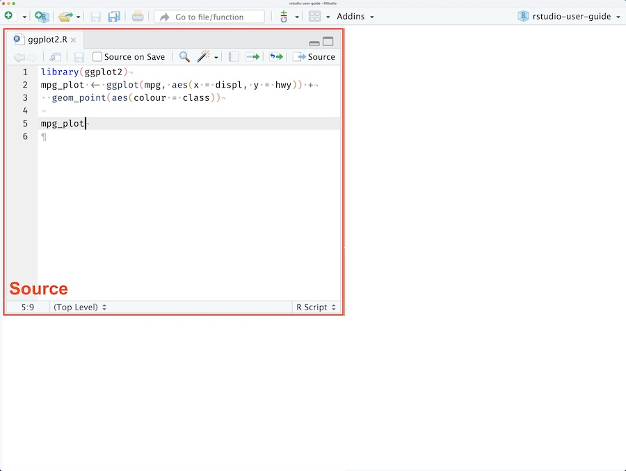
RStudio
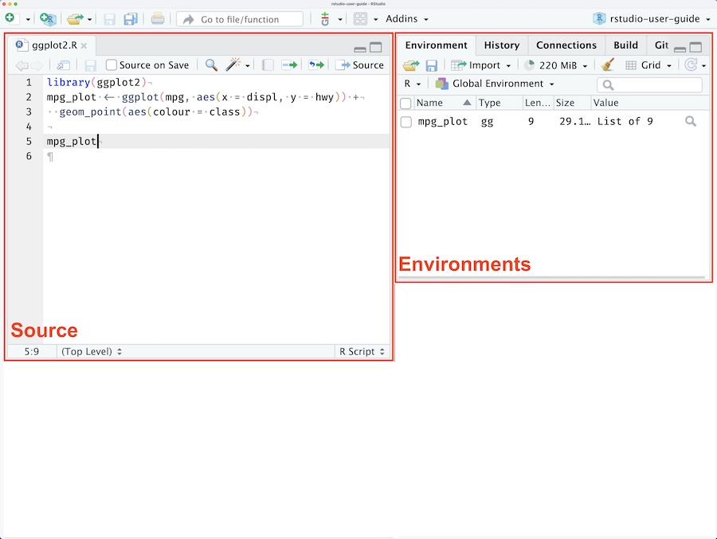
RStudio
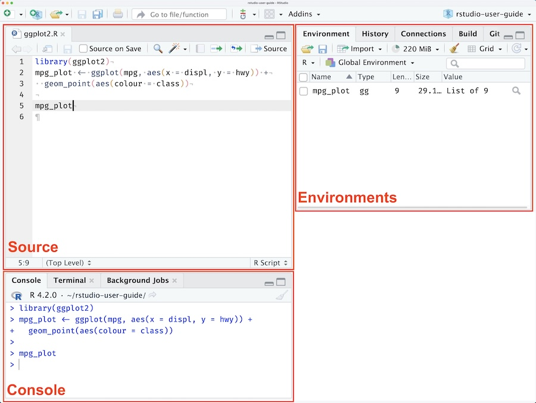
RStudio
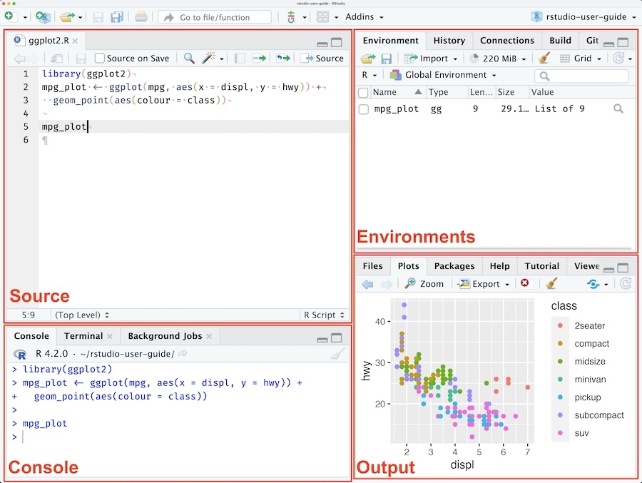
.RProj files
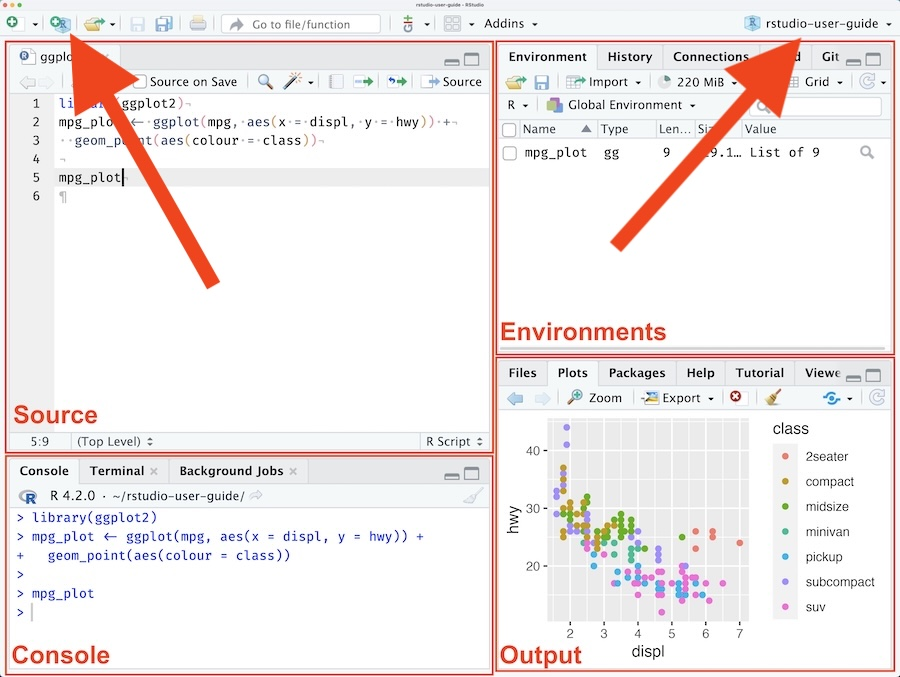
Working directory
Reproducible workflows start with good file management:
- Folders to organise your files
- Descriptive names for files and folders
.RProjfiles set the working directory
2026-08-28-penguins-analysis.RProj
code/
cleaning.R
descriptives.R
modelling.R
visualisation.R
data/
data_raw.csvdocumentation/
data_analysis_plan.docx
data_dictionary.csv
output/
forest_plot.png
model_summary.csv
sample_description.csv
penguins_report.docxAbsolute vs. relative locations
Absolute file path for the cleaning.R script:
//Volumes/shared drive/research/penguins/2026-08-28-penguins-analysis/code/cleaning.R
Relative file is relative to the current working directory:
code/cleaning.R
2026-08-28-penguins-analysis.RProj
code/
cleaning.R
descriptives.R
modelling.R
visualisation.R
data/
data_raw.csvdocumentation/
data_analysis_plan.docx
data_dictionary.csv
output/
forest_plot.png
model_summary.csv
sample_description.csv
penguins_report.docxAbsolute vs. relative locations
Use .. to specify a folder ‘up’ from the working directory
So if the working directory is:
//Volumes/shared drive/research/penguins/2026-08-28-penguins-analysis
Then ../ would be
//Volumes/shared drive/research/penguins/
2026-08-28-penguins-analysis.RProj
code/
cleaning.R
descriptives.R
modelling.R
visualisation.R
data/
data_raw.csvdocumentation/
data_analysis_plan.docx
data_dictionary.csv
output/
forest_plot.png
model_summary.csv
sample_description.csv
penguins_report.docxPackages
A package is a collection of functions usually written around a particular goal or task.
To install a package, use the install.packages function
Tip
Once you install a package it’s available for any project, no need to install for every project.
The tidyverse
A set of user-friendly tools for data manipulation and analysis
- Reading in data (
readr,readxl,haven,googlesheets4) - Data cleaning and manipulation (
dplyr,tidyr,tibble) - Data visualisation (
ggplot2) - Working with specific data types:
- Strings (
stringr) - Dates (
lubridate) - Factors (
forcats)
- Strings (
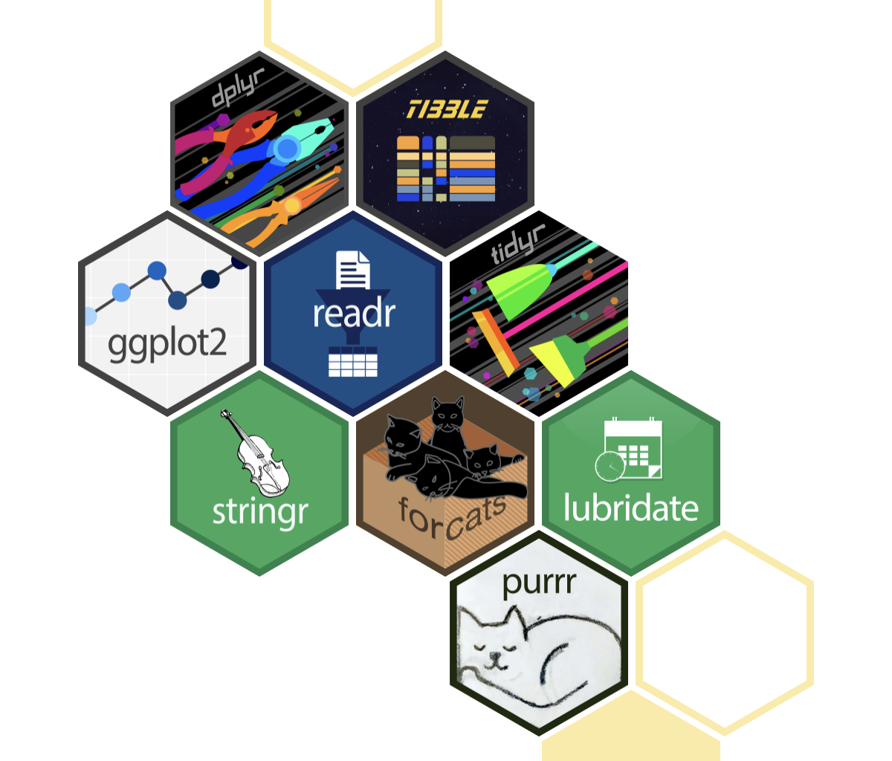
Tip
See https://tidyverse.org/packages/ for details on what’s included in the tidyverse
Package conflicts
When you load packages that have the same function name, only one will take precedence
Prevent hours of debugging by being declarative!
Question time
Let’s practice!
Coding in R
penguins
Our dataset for today — the built in dataset penguins
species island bill_len bill_dep
Adelie :152 Biscoe :168 Min. :32.10 Min. :13.10
Chinstrap: 68 Dream :124 1st Qu.:39.23 1st Qu.:15.60
Gentoo :124 Torgersen: 52 Median :44.45 Median :17.30
Mean :43.92 Mean :17.15
3rd Qu.:48.50 3rd Qu.:18.70
Max. :59.60 Max. :21.50
NAs :2 NAs :2
flipper_len body_mass sex year
Min. :172.0 Min. :2700 female:165 Min. :2007
1st Qu.:190.0 1st Qu.:3550 male :168 1st Qu.:2007
Median :197.0 Median :4050 NAs : 11 Median :2008
Mean :200.9 Mean :4202 Mean :2008
3rd Qu.:213.0 3rd Qu.:4750 3rd Qu.:2009
Max. :231.0 Max. :6300 Max. :2009
NAs :2 NAs :2 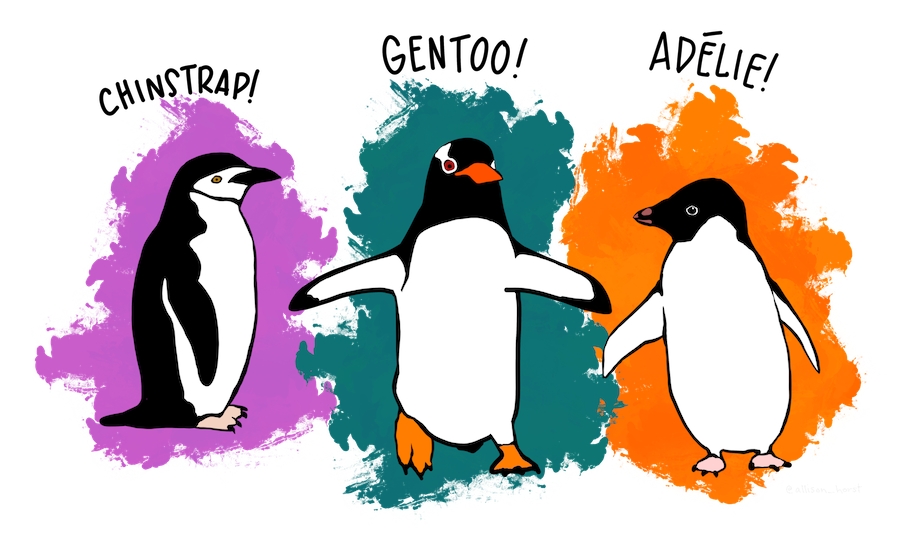
Elements of code
There are different terms for different elements of code
In the above code:
datais an objectselectis a functionspeciesandislandare arguments of theselectfunction
Assignment (<-)
R prints results in the console by default
# A tibble: 344 × 8
species island bill_len bill_dep flipper_len body_mass sex year
<chr> <chr> <dbl> <dbl> <dbl> <dbl> <chr> <dbl>
1 Adelie Torgersen 39.1 18.7 181 3750 male 2007
2 Adelie Torgersen 39.5 17.4 186 3800 female 2007
3 Adelie Torgersen 40.3 18 195 3250 female 2007
4 Adelie Torgersen NA NA NA NA <NA> 2007
5 Adelie Torgersen 36.7 19.3 193 3450 female 2007
6 Adelie Torgersen 39.3 20.6 190 3650 male 2007
7 Adelie Torgersen 38.9 17.8 181 3625 female 2007
8 Adelie Torgersen 39.2 19.6 195 4675 male 2007
9 Adelie Torgersen 34.1 18.1 193 3475 <NA> 2007
10 Adelie Torgersen 42 20.2 190 4250 <NA> 2007
# ℹ 334 more rowsTip
The shortcut for the assignment operator is Alt + - or Option + -
Accessing elements of an object
Sometimes we need to access one element of an object, such as a single column in our data
This is not always required, such as in the context of pipes
Pipes (|>)
Chain sequences of functions together using pipes
Pipes effectively fill in the first argument of a function:
Tip
The shortcut for the pipe operator is Ctrl + Shift + M
Keyboard shortcuts
To see all keyboard shortcuts, click on ‘Keyboard Shortcuts Help’ in the ‘Help’ menu
My most commonly used are:
- Insert pipe (
Ctrl + Shift + M) - Insert assignment operator (
Option/Alt + -) - Move line up or down (
Option/Alt + Up/Down) - Duplicate line or selection (
Cmd + Option + Up/Down) - Delete line or selection (
Cmd + D) - Comment or uncomment (
Cmd + Shift + C)
Common types of things
- Numbers and integers
- Logicals
- Factors (https://forcats.tidyverse.org/)
- Dates/times (https://lubridate.tidyverse.org/)
- Characters (https://stringr.tidyverse.org/)
- Missing
- Vectors and lists
- Data frames and tibbles (https://tibble.tidyverse.org/)
Missing
Missing has its own special identity in R — NA
[1] "Adelie" "Gentoo" "Chinstrap" NA It also has its own special function to check if something is missing:
Human-readable code
Tip
Formatters like air do a lot of the work for you https://tidyverse.org/blog/2025/02/air/
Common errors
Error messages
They try to tell you what the problem was, but it’s not always easy
- Read the error message
- Look at your code
- Read help files
- Check for cheatsheets
- Web search
- Join a community
- Ask an LLM
Try to figure out the solution yourself before consulting an LLM, you’ll learn more!
Tip
You’ll get lots of error messages as you learn how to code, this is normal
Help files
Documentation explaining how a function works:
- Description
- Arguments
- Examples
Run ?filter from the console, or search the ‘Help’ pane
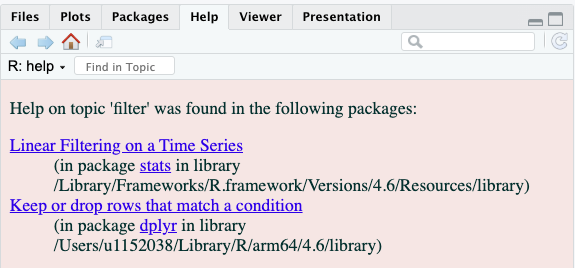
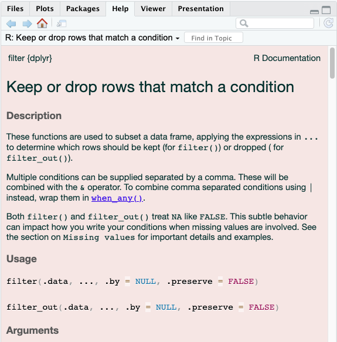
Let’s practice!
What might these error messages mean?
Question time
Break time!
Example workflow
Example workflow
Continuing with the penguins dataset, we’ll cover:
- Summaries and tables
- Data visualisation
- Regression
Summaries and tables
dplyr::summarise()
The summarise() function applies the specified summary to the whole dataset
# A tibble: 8 × 4
species sex number_penguins mean_body_mass
<chr> <chr> <int> <dbl>
1 Adelie male 73 4043.
2 Adelie female 73 3369.
3 Adelie <NA> 6 3540
4 Gentoo female 58 4680.
5 Gentoo male 61 5485.
6 Gentoo <NA> 5 4588.
7 Chinstrap female 34 3527.
8 Chinstrap male 34 3939.- If
.byis specified, it applies the summaries within each group - The summary is returned in the same format as the input (data frame, tibble)
janitor::tabyl()
The tabyl() function is a convenient way to tabulate data.
One variable
Two variables
- When tabulating two variables, the first argument is for rows, the second argument is for columns
- In both cases, the tabulation is returned as a data frame
janitor::tabyl()
There are several helper functions starting with adorn_*, that add to the tabulation
For two variables, adorn_* functions sometimes need rows or columns specified
species female male NA_ Total
Adelie 0.4802632 (73) 0.4802632 (73) 0.03947368 (6) 1 (152)
Chinstrap 0.5000000 (34) 0.5000000 (34) 0.00000000 (0) 1 (68)
Gentoo 0.4677419 (58) 0.4919355 (61) 0.04032258 (5) 1 (124)gtsummary
The gtsummary package has many functions for producing summary tables
We’ll focus on the tbl_summary() function
# Function arguments
tbl_summary(
data,
by = NULL,
label = NULL,
statistic = list(all_continuous() ~ "{median} ({p25}, {p75})", all_categorical() ~
"{n} ({p}%)"),
digits = NULL,
type = NULL,
value = NULL,
missing = c("ifany", "no", "always"),
missing_text = "Unknown",
missing_stat = "{N_miss}",
sort = all_categorical(FALSE) ~ "alphanumeric",
percent = c("column", "row", "cell"),
include = everything()
)tbl_summary()
| Characteristic | Adelie N = 1521 |
Chinstrap N = 681 |
Gentoo N = 1241 |
|---|---|---|---|
| sex | |||
| female | 73 (50%) | 34 (50%) | 58 (49%) |
| male | 73 (50%) | 34 (50%) | 61 (51%) |
| Unknown | 6 | 0 | 5 |
| bill_len | 38.8 (36.7, 40.8) | 49.6 (46.3, 51.2) | 47.3 (45.3, 49.6) |
| Unknown | 1 | 0 | 1 |
| flipper_len | 190 (186, 195) | 196 (191, 201) | 216 (212, 221) |
| Unknown | 1 | 0 | 1 |
| 1 n (%); Median (Q1, Q3) | |||
tbl_summary()
| Characteristic | Adelie N = 1521 |
Chinstrap N = 681 |
Gentoo N = 1241 |
|---|---|---|---|
| sex | |||
| female | 73 [50%] | 34 [50%] | 58 [49%] |
| male | 73 [50%] | 34 [50%] | 61 [51%] |
| Unknown | 6 | 0 | 5 |
| bill_len | 38.8 (2.7) | 48.8 (3.3) | 47.5 (3.1) |
| Unknown | 1 | 0 | 1 |
| flipper_len | 190 (7) | 196 (7) | 217 (6) |
| Unknown | 1 | 0 | 1 |
| 1 n [%]; Mean (SD) | |||
tbl_summary()
penguin_summary <- tbl_summary(
data,
1 by = species,
2 include = c(
sex,
bill_len,
flipper_len,
),
3 statistic = list(
all_continuous() ~ "{mean} ({sd})",
all_categorical() ~ "{n} [{p}%]"
),
4 label = list(
sex = "Sex",
bill_len = "Bill length",
flipper_len = "Flipper length",
body_mass = "Body mass (g)"
)
)- 1
- Which variable to produce summaries by
- 2
- Which variables to summarise
- 3
- What statistics to produce
- 4
- Specify labels for the variables
| Characteristic | Adelie N = 1521 |
Chinstrap N = 681 |
Gentoo N = 1241 |
|---|---|---|---|
| Sex | |||
| female | 73 [50%] | 34 [50%] | 58 [49%] |
| male | 73 [50%] | 34 [50%] | 61 [51%] |
| Unknown | 6 | 0 | 5 |
| Bill length | 38.8 (2.7) | 48.8 (3.3) | 47.5 (3.1) |
| Unknown | 1 | 0 | 1 |
| Flipper length | 190 (7) | 196 (7) | 217 (6) |
| Unknown | 1 | 0 | 1 |
| 1 n [%]; Mean (SD) | |||
tbl_summary()
penguin_summary <- tbl_summary(
data,
1 by = species,
2 include = c(
sex,
bill_len,
flipper_len,
),
3 statistic = list(
all_continuous() ~ "{mean} ({sd})",
all_categorical() ~ "{n} [{p}%]"
),
4 label = list(
sex = "Sex",
bill_len = "Bill length",
flipper_len = "Flipper length",
body_mass = "Body mass (g)"
),
5 missing_text = "Missing",
missing_stat = "{p_miss}"
)- 1
- Which variable to produce summaries by
- 2
- Which variables to summarise
- 3
- What statistics to produce
- 4
- Specify labels for the variables
- 5
- Control how missing data are summarised
| Characteristic | Adelie N = 1521 |
Chinstrap N = 681 |
Gentoo N = 1241 |
|---|---|---|---|
| Sex | |||
| female | 73 [50%] | 34 [50%] | 58 [49%] |
| male | 73 [50%] | 34 [50%] | 61 [51%] |
| Missing | 3.9 | 0 | 4.0 |
| Bill length | 38.8 (2.7) | 48.8 (3.3) | 47.5 (3.1) |
| Missing | 0.7 | 0 | 0.8 |
| Flipper length | 190 (7) | 196 (7) | 217 (6) |
| Missing | 0.7 | 0 | 0.8 |
| 1 n [%]; Mean (SD) | |||
tbl_summary()
Other packages for tables
Creating tables via Quarto or RMarkdown:
flextablehas the best MS Word supportkableis good for PDF outputgtis highly customisable for HTML output
These do not create summaries for you!
Let’s practice!
Data visualisation
Package options
plot() — base R
ggplot2 — part of the tidyverse, highly customisable
tidyplots — simpler interface to ggplot2
ggplot2
There are many plot types available, including:
Raw data
- Scatter plots (
geom_point()) - Dot plots (
geom_dotplot()) - Line graph (
geom_line())
Summaries
- Bar plots (
geom_bar(),geom_col()) - Bars with errors (
geom_errorbar()) - Box and whisker plots (
geom_boxplot())
Distributions
- Histogram (
geom_hist()) - Density (
geom_density()) - Violin (
geom_violin())
Tip
See the documentation for all available plots https://ggplot2.tidyverse.org/reference/index.html
ggplot2
All plots start with the ggplot() function
Scatter plot
From this, we add to the plot using the + symbol

Bar plot
For some plots, it doesn’t make sense to plot the raw data.

Tip
Use geom_col() on summarised data, geom_bar() to summarise raw data
Bar plot
Instead, we need to summarise the data first and plot the summarised values
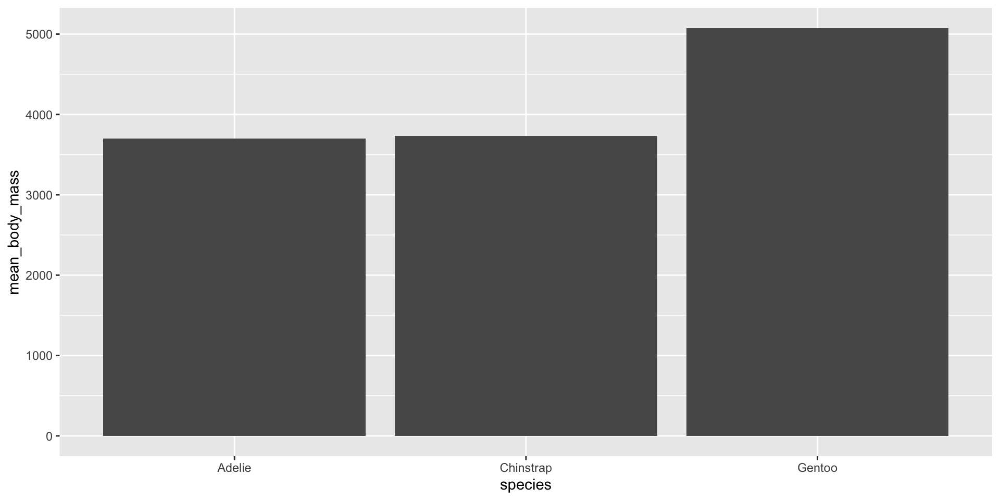
Tip
Use geom_col() on summarised data, geom_bar() to summarise raw data
Line graph
Line graph

Questions?
Customising a plot
Customising axes

Customising the legend
Customising with a theme

Tip
There are several themes available! theme_minimal() is popular, but has a transparent background.
Adding an element
Adding a facet
Saving the output
Let’s practice!
Use ggplot2 to make a bar chart showing the count of each penguin species, format the axes, and add a theme.
Questions?
Regression
Model notation
To regress body_mass on sex and species, we write:
Outcome (body_mass) left of the tilde ~
Covariates right of the tilde, separated with a plus +
Model fit
You can plot the output of lm()


Model summary
Call:
lm(formula = body_mass ~ sex + species, data = data)
Residuals:
Min 1Q Median 3Q Max
-816.87 -217.80 -16.87 227.61 882.20
Coefficients:
Estimate Std. Error t value Pr(>|t|)
(Intercept) 3372.39 31.43 107.308 <2e-16 ***
sexmale 667.56 34.70 19.236 <2e-16 ***
speciesChinstrap 26.92 46.48 0.579 0.563
speciesGentoo 1377.86 39.10 35.236 <2e-16 ***
---
Signif. codes: 0 '***' 0.001 '**' 0.01 '*' 0.05 '.' 0.1 ' ' 1
Residual standard error: 316.6 on 329 degrees of freedom
(11 observations deleted due to missingness)
Multiple R-squared: 0.8468, Adjusted R-squared: 0.8454
F-statistic: 606.1 on 3 and 329 DF, p-value: < 2.2e-16Accessing model results
[1] "coefficients" "residuals" "effects" "rank"
[5] "fitted.values" "assign" "qr" "df.residual"
[9] "na.action" "contrasts" "xlevels" "call"
[13] "terms" "model" 1 2 3 5 6 7
-289.9419594 427.6131923 -122.3868077 77.6131923 -389.9419594 252.6131923
8 13 14 15 16 17
635.0580406 -172.3868077 -239.9419594 360.0580406 327.6131923 77.6131923
18 19 20 21 22 23
460.0580406 -47.3868077 160.0580406 27.6131923 -439.9419594 427.6131923
24 25 26 27 28 29
-89.9419594 -239.9419594 427.6131923 -489.9419594 -172.3868077 -222.3868077
30 31 32 33 34 35
-89.9419594 -122.3868077 -139.9419594 -72.3868077 -139.9419594 -47.3868077
36 37 38 39 40 41
110.0580406 -89.9419594 177.6131923 -72.3868077 610.0580406 -222.3868077
42 43 44 45 46 47
-139.9419594 -272.3868077 360.0580406 -372.3868077 560.0580406 -614.9419594
49 50 51 52 53 54
77.6131923 110.0580406 127.6131923 260.0580406 77.6131923 10.0580406
55 56 57 58 59 60
-472.3868077 -339.9419594 177.6131923 -239.9419594 -522.3868077 -289.9419594
61 62 63 64 65 66
-222.3868077 360.0580406 227.6131923 10.0580406 -522.3868077 -89.9419594
67 68 69 70 71 72
-22.3868077 60.0580406 -322.3868077 410.0580406 227.6131923 -139.9419594
73 74 75 76 77 78
177.6131923 110.0580406 327.6131923 210.0580406 327.6131923 -139.9419594
79 80 81 82 83 84
177.6131923 -39.9419594 -172.3868077 660.0580406 427.6131923 160.0580406
85 86 87 88 89 90
-22.3868077 -489.9419594 -239.9419594 127.6131923 -89.9419594 227.6131923
91 92 93 94 95 96
177.6131923 260.0580406 27.6131923 410.0580406 -72.3868077 260.0580406
97 98 99 100 101 102
327.6131923 310.0580406 -472.3868077 60.0580406 352.6131923 685.0580406
103 104 105 106 107 108
-297.3868077 210.0580406 -447.3868077 -489.9419594 377.6131923 -139.9419594
109 110 111 112 113 114
-197.3868077 735.0580406 452.6131923 560.0580406 -172.3868077 235.0580406
115 116 117 118 119 120
527.6131923 35.0580406 -472.3868077 -264.9419594 -22.3868077 -714.9419594
121 122 123 124 125 126
-222.3868077 -539.9419594 77.6131923 -164.9419594 -322.3868077 -39.9419594
127 128 129 130 131 132
-97.3868077 260.0580406 -322.3868077 -39.9419594 -47.3868077 -539.9419594
133 134 135 136 137 138
127.6131923 435.0580406 52.6131923 -139.9419594 -197.3868077 -64.9419594
139 140 141 142 143 144
27.6131923 210.0580406 27.6131923 -564.9419594 -322.3868077 -314.9419594
145 146 147 148 149 150
-372.3868077 -389.9419594 210.0580406 102.6131923 77.6131923 -289.9419594
151 152 153 154 155 156
327.6131923 -39.9419594 -250.2448382 282.2000101 -300.2448382 282.2000101
157 158 159 160 161 162
-17.7999899 -200.2448382 49.7551618 -217.7999899 -350.2448382 -267.7999899
163 164 165 166 167 168
-100.2448382 132.2000101 -100.2448382 432.2000101 -550.2448382 432.2000101
169 170 171 172 173 174
-600.2448382 882.2000101 49.7551618 -67.7999899 282.2000101 249.7551618
175 176 177 178 180 181
-350.2448382 -367.7999899 249.7551618 -317.7999899 232.2000101 -150.2448382
182 183 184 185 186 187
132.2000101 -167.7999899 -50.2448382 299.7551618 632.2000101 399.7551618
188 189 190 191 192 193
-17.7999899 199.7551618 -167.7999899 -400.2448382 -67.7999899 -800.2448382
194 195 196 197 198 199
282.2000101 -450.2448382 -667.7999899 132.2000101 149.7551618 -550.2448382
200 201 202 203 204 205
-17.7999899 349.7551618 -117.7999899 99.7551618 -117.7999899 -350.2448382
206 207 208 209 210 211
-417.7999899 149.7551618 -367.7999899 -450.2448382 -417.7999899 -300.2448382
212 213 214 215 216 217
132.2000101 -550.2448382 -117.7999899 -350.2448382 232.2000101 -50.2448382
218 220 221 222 223 224
282.2000101 382.2000101 -50.2448382 132.2000101 -0.2448382 -417.7999899
225 226 227 228 229 230
-317.7999899 449.7551618 -50.2448382 382.2000101 -150.2448382 582.2000101
231 232 233 234 235 236
-0.2448382 532.2000101 -125.2448382 32.2000101 -25.2448382 -67.7999899
237 238 239 240 241 242
-0.2448382 182.2000101 -150.2448382 -117.7999899 124.7551618 132.2000101
243 244 245 246 247 248
199.7551618 -17.7999899 -0.2448382 232.2000101 99.7551618 -217.7999899
249 250 251 252 253 254
-492.7999899 124.7551618 -125.2448382 -167.7999899 99.7551618 182.2000101
255 256 258 259 260 261
224.7551618 82.2000101 82.2000101 -50.2448382 82.2000101 -175.2448382
262 263 264 265 266 267
82.2000101 249.7551618 532.2000101 -100.2448382 82.2000101 -375.2448382
268 270 271 273 274 275
432.2000101 582.2000101 174.7551618 99.7551618 332.2000101 449.7551618
276 277 278 279 280 281
-17.7999899 100.6893406 -166.8658111 -416.8658111 125.6893406 -341.8658111
282 283 284 285 286 287
550.6893406 -149.3106594 -316.8658111 750.6893406 -366.8658111 400.6893406
288 289 290 291 292 293
-291.8658111 300.6893406 -16.8658111 175.6893406 -16.8658111 -766.8658111
294 295 296 297 298 299
300.6893406 50.6893406 333.1341889 200.6893406 -666.8658111 -499.3106594
300 301 302 303 304 305
-266.8658111 -99.3106594 83.1341889 0.6893406 -266.8658111 300.6893406
306 307 308 309 310 311
483.1341889 -199.3106594 233.1341889 -49.3106594 33.1341889 -466.8658111
312 313 314 315 316 317
500.6893406 450.6893406 733.1341889 -699.3106594 433.1341889 -116.8658111
318 319 320 321 322 323
250.6893406 -516.8658111 100.6893406 275.6893406 383.1341889 0.6893406
324 325 326 327 328 329
233.1341889 -816.8658111 275.6893406 -74.3106594 -116.8658111 200.6893406
330 331 332 333 334 335
-16.8658111 -49.3106594 -616.8658111 -149.3106594 -16.8658111 -266.8658111
336 337 338 339 340 341
125.6893406 -116.8658111 250.6893406 250.6893406 -66.8658111 0.6893406
342 343 344
-291.8658111 33.1341889 375.6893406 body_mass ~ sex + species
attr(,"variables")
list(body_mass, sex, species)
attr(,"factors")
sex species
body_mass 0 0
sex 1 0
species 0 1
attr(,"term.labels")
[1] "sex" "species"
attr(,"order")
[1] 1 1
attr(,"intercept")
[1] 1
attr(,"response")
[1] 1
attr(,".Environment")
<environment: R_GlobalEnv>
attr(,"predvars")
list(body_mass, sex, species)
attr(,"dataClasses")
body_mass sex species
"numeric" "character" "character" 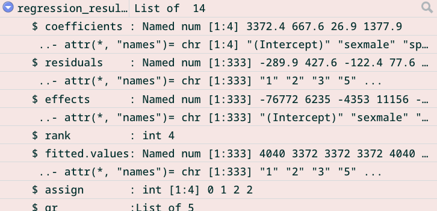
Accessing model results
gtsummary has a function for this 1
| Characteristic | Beta | 95% CI | p-value |
|---|---|---|---|
| (Intercept) | 3,372 | 3,311, 3,434 | <0.001 |
| sex | |||
| female | — | — | |
| male | 668 | 599, 736 | <0.001 |
| species | |||
| Adelie | — | — | |
| Chinstrap | 27 | -65, 118 | 0.563 |
| Gentoo | 1,378 | 1,301, 1,455 | <0.001 |
| Abbreviation: CI = Confidence Interval | |||
Available models*
Base R:
- Linear
lm() - Generalised linear
glm() - Time series
ar(),arima(),arima0()
Packages for common models:
survivalfor survival analysisgeefor generalised estimating equationslme4andglmmTMBfor mixed-effects modelsbrmsBayesian stuffgamandgamlssfor generalised additive models
Questions!
Data wrangling
Reading in data
Which package to use?
readrfor reading.csvfilesreadxlfor Excel files (.xlsand.xlsx)havenfor Stata, SPSS, and SAS filesgooglesheets4for reading directly from Google Sheets
Tip
See the reading data cheatsheet: https://github.com/rstudio/cheatsheets/blob/main/data-import.pdf
Reading in data
If the data are clean, it’s not complicated
# Function arguments
read_csv(
file,
col_names = TRUE,
col_types = NULL,
col_select = NULL,
id = NULL,
locale = default_locale(),
na = c("", "NA"),
quoted_na = deprecated(),
quote = "\"",
comment = "",
trim_ws = TRUE,
skip = 0,
n_max = Inf,
guess_max = min(1000, n_max),
name_repair = "unique",
num_threads = readr_threads(),
progress = show_progress(),
show_col_types = should_show_types(),
skip_empty_rows = TRUE,
lazy = should_read_lazy()
)Reading in messy data
Data aren’t always machine-readable, especially from the ABS
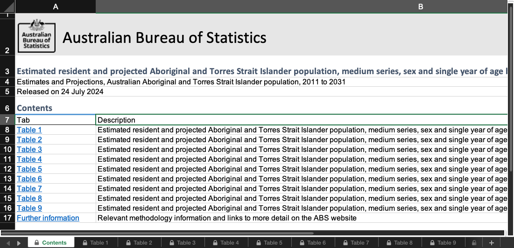
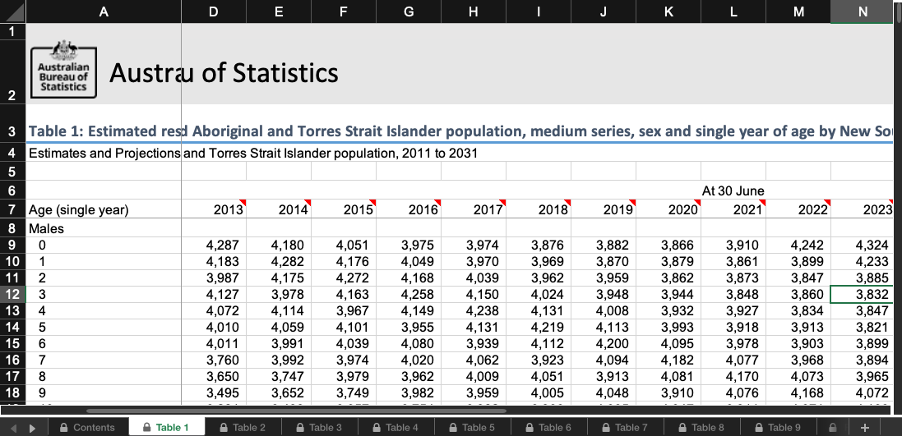
Reading in messy data
Viewing data
Look at your data!
View()or click on the object- type the name in the console (
data) - use
head()to see a snapshot - use
dplyr::glimpse()
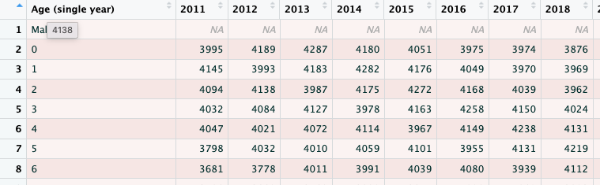
# A tibble: 136 × 22
`Age (single year)` `2011` `2012` `2013` `2014` `2015` `2016` `2017` `2018`
<chr> <dbl> <dbl> <dbl> <dbl> <dbl> <dbl> <dbl> <dbl>
1 Males NA NA NA NA NA NA NA NA
2 0 3995 4189 4287 4180 4051 3975 3974 3876
3 1 4145 3993 4183 4282 4176 4049 3970 3969
4 2 4094 4138 3987 4175 4272 4168 4039 3962
5 3 4032 4084 4127 3978 4163 4258 4150 4024
6 4 4047 4021 4072 4114 3967 4149 4238 4131
7 5 3798 4032 4010 4059 4101 3955 4131 4219
8 6 3681 3778 4011 3991 4039 4080 3939 4112
9 7 3506 3662 3760 3992 3974 4020 4062 3923
10 8 3275 3493 3650 3747 3979 3962 4009 4051
# ℹ 126 more rows
# ℹ 13 more variables: `2019` <dbl>, `2020` <dbl>, `2021` <dbl>, `2022` <dbl>,
# `2023` <dbl>, `2024` <dbl>, `2025` <dbl>, `2026` <dbl>, `2027` <dbl>,
# `2028` <dbl>, `2029` <dbl>, `2030` <dbl>, `2031` <dbl># A tibble: 6 × 22
`Age (single year)` `2011` `2012` `2013` `2014` `2015` `2016` `2017` `2018`
<chr> <dbl> <dbl> <dbl> <dbl> <dbl> <dbl> <dbl> <dbl>
1 Males NA NA NA NA NA NA NA NA
2 0 3995 4189 4287 4180 4051 3975 3974 3876
3 1 4145 3993 4183 4282 4176 4049 3970 3969
4 2 4094 4138 3987 4175 4272 4168 4039 3962
5 3 4032 4084 4127 3978 4163 4258 4150 4024
6 4 4047 4021 4072 4114 3967 4149 4238 4131
# ℹ 13 more variables: `2019` <dbl>, `2020` <dbl>, `2021` <dbl>, `2022` <dbl>,
# `2023` <dbl>, `2024` <dbl>, `2025` <dbl>, `2026` <dbl>, `2027` <dbl>,
# `2028` <dbl>, `2029` <dbl>, `2030` <dbl>, `2031` <dbl>Rows: 136
Columns: 22
$ `Age (single year)` <chr> "Males", "0", "1", "2", "3", "4", "5", "6", "7", "…
$ `2011` <dbl> NA, 3995, 4145, 4094, 4032, 4047, 3798, 3681, 3506…
$ `2012` <dbl> NA, 4189, 3993, 4138, 4084, 4021, 4032, 3778, 3662…
$ `2013` <dbl> NA, 4287, 4183, 3987, 4127, 4072, 4010, 4011, 3760…
$ `2014` <dbl> NA, 4180, 4282, 4175, 3978, 4114, 4059, 3991, 3992…
$ `2015` <dbl> NA, 4051, 4176, 4272, 4163, 3967, 4101, 4039, 3974…
$ `2016` <dbl> NA, 3975, 4049, 4168, 4258, 4149, 3955, 4080, 4020…
$ `2017` <dbl> NA, 3974, 3970, 4039, 4150, 4238, 4131, 3939, 4062…
$ `2018` <dbl> NA, 3876, 3969, 3962, 4024, 4131, 4219, 4112, 3923…
$ `2019` <dbl> NA, 3882, 3870, 3959, 3948, 4008, 4113, 4200, 4094…
$ `2020` <dbl> NA, 3866, 3879, 3862, 3944, 3932, 3993, 4095, 4182…
$ `2021` <dbl> NA, 3910, 3861, 3873, 3848, 3927, 3918, 3978, 4077…
$ `2022` <dbl> NA, 4242, 3899, 3847, 3860, 3834, 3913, 3903, 3968…
$ `2023` <dbl> NA, 4324, 4233, 3885, 3832, 3847, 3821, 3899, 3894…
$ `2024` <dbl> NA, 4394, 4315, 4219, 3870, 3818, 3833, 3808, 3890…
$ `2025` <dbl> NA, 4467, 4385, 4301, 4204, 3856, 3803, 3820, 3801…
$ `2026` <dbl> NA, 4540, 4458, 4372, 4286, 4189, 3841, 3789, 3813…
$ `2027` <dbl> NA, 4613, 4531, 4444, 4357, 4271, 4176, 3826, 3780…
$ `2028` <dbl> NA, 4691, 4605, 4517, 4428, 4343, 4257, 4162, 3818…
$ `2029` <dbl> NA, 4756, 4682, 4590, 4501, 4413, 4329, 4242, 4153…
$ `2030` <dbl> NA, 4821, 4747, 4667, 4574, 4486, 4398, 4314, 4233…
$ `2031` <dbl> NA, 4876, 4812, 4732, 4650, 4559, 4471, 4382, 4305…Renaming
janitor::clean_names() is a starting point
dplyr::rename() and dplyr::rename_with() let you specify names
Selecting
Keep or remove columns using select()
containsmatches against a patternstarts_withonly looks at the startwherekeeps columns that meet a criteria- See the
tidyselectpackage
# A tibble: 136 × 11
age x2020 x2021 x2022 x2023 x2024 x2025 x2026 x2027 x2028 x2029
<chr> <dbl> <dbl> <dbl> <dbl> <dbl> <dbl> <dbl> <dbl> <dbl> <dbl>
1 Males NA NA NA NA NA NA NA NA NA NA
2 0 3866 3910 4242 4324 4394 4467 4540 4613 4691 4756
3 1 3879 3861 3899 4233 4315 4385 4458 4531 4605 4682
4 2 3862 3873 3847 3885 4219 4301 4372 4444 4517 4590
5 3 3944 3848 3860 3832 3870 4204 4286 4357 4428 4501
6 4 3932 3927 3834 3847 3818 3856 4189 4271 4343 4413
7 5 3993 3918 3913 3821 3833 3803 3841 4176 4257 4329
8 6 4095 3978 3903 3899 3808 3820 3789 3826 4162 4242
9 7 4182 4077 3968 3894 3890 3801 3813 3780 3818 4153
10 8 4081 4170 4073 3965 3893 3888 3799 3811 3778 3815
# ℹ 126 more rows- We’ve kept the
agevariable and counts for the 2020s
Filtering
Keep or remove rows using dplyr::filter()
# A tibble: 48 × 11
age x2020 x2021 x2022 x2023 x2024 x2025 x2026 x2027 x2028 x2029
<chr> <dbl> <dbl> <dbl> <dbl> <dbl> <dbl> <dbl> <dbl> <dbl> <dbl>
1 Males NA NA NA NA NA NA NA NA NA NA
2 18 3355 3259 3449 3606 3694 3921 3911 3944 3978 3856
3 19 3245 3336 3237 3423 3580 3669 3894 3887 3919 3952
4 20 3147 3222 3309 3213 3395 3552 3643 3867 3861 3893
5 21 3061 3123 3196 3281 3187 3366 3524 3614 3837 3834
6 22 3000 3037 3105 3178 3261 3171 3347 3505 3596 3817
7 23 2926 2984 3017 3084 3156 3237 3152 3325 3482 3573
8 24 2819 2905 2965 2996 3063 3134 3214 3132 3302 3458
9 25 2877 2800 2877 2938 2970 3035 3106 3185 3105 3273
10 26 2590 2850 2773 2848 2911 2943 3008 3079 3156 3079
# ℹ 38 more rows- We’ve kept only ages 18 to 40, or where age is
MalesorFemales
Modifying
Update an existing column or make a new one using mutate()
- the condition (left-side) must evaluate to TRUE or FALSE
- the value to assign if this condition is true (right-side)
- separated by a tilde
~ - the
.defaultisNAif you don’t specify anything - applies conditions from top to bottom
sexis extracted from theagevariableageis numeric nowage_groupis based on age ranges
Filling in missing data
dplyr::fill() fills in missing data using the last non-missing values
[1] "Males" "Males" "Males" "Males" "Males" "Males" "Males"
[8] "Males" "Males" "Males" "Males" "Males" "Males" "Males"
[15] "Males" "Males" "Males" "Males" "Males" "Males" "Males"
[22] "Males" "Males" "Males" "Females" "Females" "Females" "Females"
[29] "Females" "Females" "Females" "Females" "Females" "Females" "Females"
[36] "Females" "Females" "Females" "Females" "Females" "Females" "Females"
[43] "Females" "Females" "Females" "Females" "Females" "Females"Reshaping data
Use pivot_longer() and pivot_wider() to reshape datasets
# A tibble: 460 × 5
age sex age_group year count
<dbl> <chr> <chr> <chr> <dbl>
1 18 Males 18 to 24 x2020 3355
2 18 Males 18 to 24 x2021 3259
3 18 Males 18 to 24 x2022 3449
4 18 Males 18 to 24 x2023 3606
5 18 Males 18 to 24 x2024 3694
6 18 Males 18 to 24 x2025 3921
7 18 Males 18 to 24 x2026 3911
8 18 Males 18 to 24 x2027 3944
9 18 Males 18 to 24 x2028 3978
10 18 Males 18 to 24 x2029 3856
# ℹ 450 more rows# A tibble: 230 × 5
age age_group year Males Females
<dbl> <chr> <chr> <dbl> <dbl>
1 18 18 to 24 x2020 3355 3089
2 18 18 to 24 x2021 3259 3110
3 18 18 to 24 x2022 3449 3182
4 18 18 to 24 x2023 3606 3326
5 18 18 to 24 x2024 3694 3551
6 18 18 to 24 x2025 3921 3798
7 18 18 to 24 x2026 3911 3747
8 18 18 to 24 x2027 3944 3770
9 18 18 to 24 x2028 3978 3778
10 18 18 to 24 x2029 3856 3709
# ℹ 220 more rowsGrouping
Use group_by() or the .by = argument
.byapplies the grouping just for that operation, so grouping doesn’t persist- Available for:
filter()andfilter_out()mutate()summarise()slice()functions
Let’s practice!
Going back to the penguins dataset
Question time
Where to next?
R resources:
- R for Data Science https://r4ds.hadley.nz/
- Advanced R https://adv-r.hadley.nz/index.html
- The Epidemiologist R Handbook https://epirhandbook.com/en/
- A little out of date, but still relevant
Consider learning Quarto (https://quarto.org/), for reproducible workflows
Feedback?
I don’t want it!
Slides available from https://benharrap.github.io/workshops/2026-10-13-AEA2026/slides.html
Comments
Use comments explain context, intention, functionality etc.
Use bookmarks to navigate sections of code
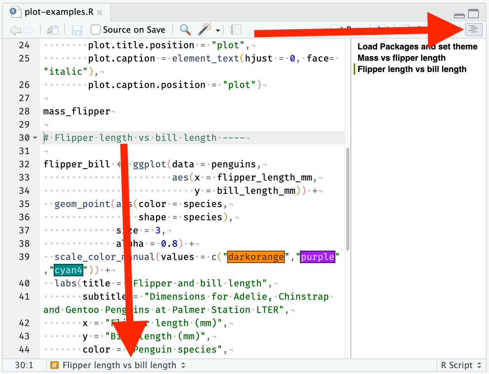